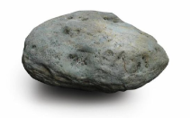

돌

축하합니다. 당신은 [돌]입니다.
외계인과는 거리가 멀군요!
당신은 높은 확률로 오른손잡이거나 전생을
믿지 않거나 일루미나티를 믿지 않거나
외계인을 믿지 않거나 일 것입니다.
돌이지만 이 테스트를 한 사람 중 가장 인간같은 당신입니다.
남들과 무던하게 잘 어울리는 게 매력인 당신!
[저또개]는 당신을 응원합니다.
혹시 예측이 틀렸나요? 틀렸다면 죄송합니다.
하지만 한 개 정도는 맞는 게 있을 거예요.. (총총)
{% endblock content%}
{% block script %}
{% endblock script %}